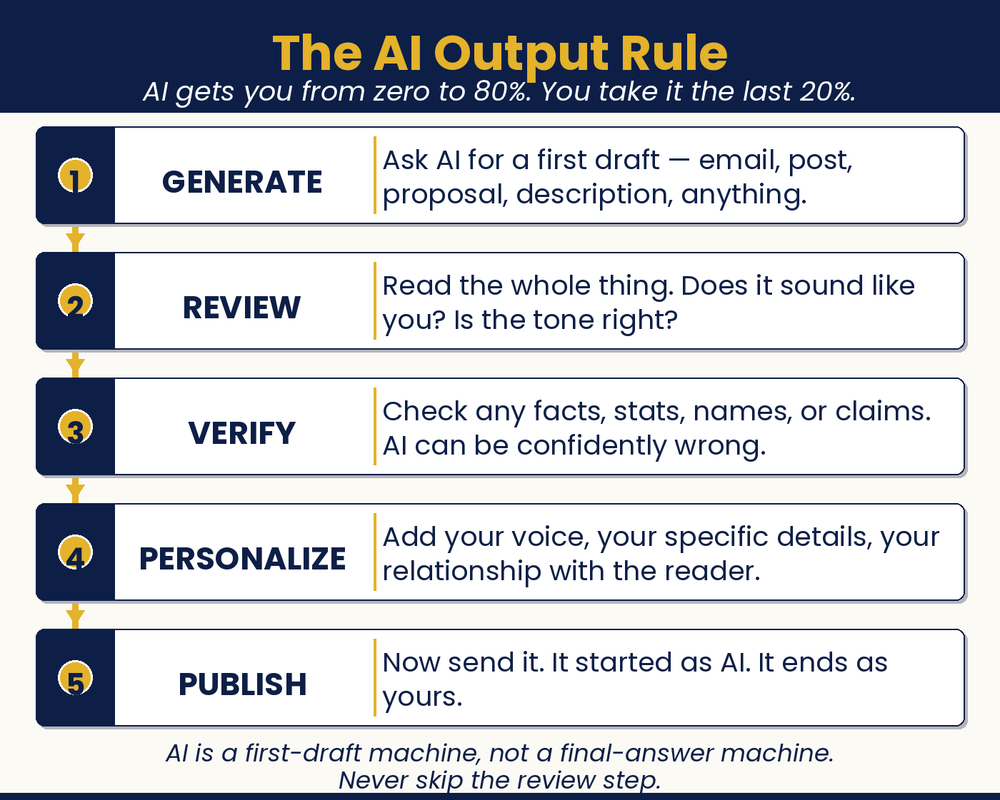

Chapter 19 — Everyone Makes Mistakes
The Seven to Avoid
What are the most common AI mistakes, and how do I avoid them?

Chapter Recap
Everyone slips up with AI at first. The good news is the mistakes are easy to avoid. This chapter names the seven most common ones. Trusting AI blindly. Sharing private data. Letting it replace your voice. Giving up too soon. Publishing without a read-through. And a couple more. Each one has a simple fix. Learn them now, and you skip the painful lessons. A quick check before you hit send saves you every time.
In This Chapter
- Mistake #1: Trusting AI Blindly
- Mistake #2: Using AI as Your Replacement
- Mistake #3: Giving Up after One Bad Result
- Mistake #4: Sharing Sensitive Information
- Mistake #5: Over-Automating Relationships
- Mistake #6: Publishing AI Output without Editing
- Mistake #7: Implementing Everything at Once
- Not Mistakes, Opportunities
Grab-and-Go Prompts
1. Verify a Statistic or Claim — use right after AI gives you a fact
What is the original source for that, and how would I verify it?
2. Fix the Tone — when output doesn’t sound like you
The tone is off. Here’s what sounds more like me: [paste an example of your own writing].
Download
- 📄 Pre-Send AI Quality Checklist — seven quick checks to run before you publish or send anything AI-generated.
Your Move
Which of these seven mistakes have you already made, or are most likely to make? Write it down. Then write one specific thing you’ll do differently because of reading this chapter. That’s your new rule. Post it somewhere visible.

Read the full chapter in
AI Jiu-Jitsu: Run Circles Around the Big Guys, the book this toolbox comes from.
Prefer to have it set up for you? BreakThru Growth offers AI coaching and done-for-you setup for small businesses → BreakThruGrowth.com